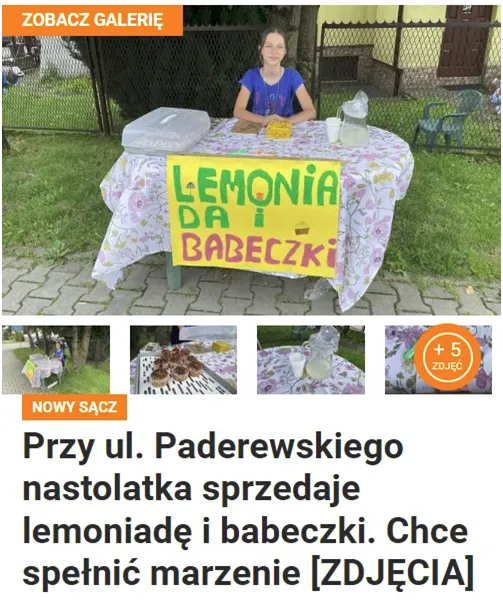

Miałem sen, że tysiące, dziesiątki tysięcy młodych Polaków rozstawia stoliki z lemoniadą na rynkach swych miast i miasteczek.
Taka sytuacja na profilu FB Konfederacji i ludzie spekulują, że przyjdzie sanepid ze skarbówką i dadzą dziewczynie popalić. To by była przed wyborami bramka samobójcza. Głupota ludzka w Polsce nasila się w okresie wyborów, więc mam obawy.

Miałem sen, że tysiące, dziesiątki tysięcy młodych Polaków rozstawia stoliki z lemoniadą na rynkach swych miast i miasteczek. Zbierają na swe marzenia, bo ich rodzice oddali ponad 50% swych zarobków w podatkach i nie mają na rower oraz wakacje dla swych dzieci.
W tym śnie skarbówka kupuje od nich po pracy lemoniadę, która cudownie leczy ich choroby i można zamknąć ZUS. Budzi się Śpiący rycerz spod Giewontu, rozpycha Karpaty na Wschód i Zachód, poszerza Bramę Morawską tak, że z Węgier do Polski wlewa się śródziemnomorskie powietrze i mamy prawdziwe ocieplenie klimatu, a nie takie statystyczne badziewie o 0,1 st. C. Na moim polu hoduję arbuzy i bakłażany bez foliowych namiotów i środków grzybobójczych. Z tych arbuzów robimy lemoniadę i tak w kółko.
Miałem taki piękny sen.
Paweł Klimczewski